Hacking PRML
Chapter 1 Introduction
-
✑ Problem 1‐1. Consider the sum‐of‐squares error function given by (1.2) in which the function is given by the polynomial (1.1). Show that the coefficients = {} that minimize this error function are given by the solution to the following set of linear equations
where
Here a suffix i or j denotes the index of a component, whereas denotes x raised to the power of i. ♢


![(1.4–1.3) \{begin}{align*} \dfrac {dE(\vec {w})}{dw_i} &= \sum _{n=1}^{N} \left \{ \sum _{j=0}^{M} w_j x_n^j - t_n \right \} \dfrac {d\left (\sum _{j=0}^{M} w_j x_n^j - t_n\right )}{dw_i} \\ &= \sum _{n=1}^{N} \left \{
\sum _{j=0}^{M} w_j x_n^j - t_n \right \} \dfrac {d\left (w_0 x_n^0 + w_1 x_n^1 + \ldots + w_i x_n^i + \ldots + w_N x_n^M - t_n\right )}{dw_i} \\ &= \sum _{n=1}^{N} \left \{ \sum _{j=0}^{M} w_j x_n^j - t_n \right \} x_n^i \\ &=
\sum _{n=1}^{N} \sum _{j=0}^{M} w_j x_n^j x_n^i - \sum _{n=1}^{N} t_n x_n^i \\ &= \sum _{n=1}^{N} \sum _{j=0}^{M} w_j x_n^{i + j} - \sum _{n=1}^{N} t_n x_n^i \\ &= \sum _{j=0}^{M} \sum _{n=1}^{N} \left (x_n\right )^{i + j} w_j -
\sum _{n=1}^{N} \left (x_n\right )^i t_n \\ &= \sum _{j=0}^M A_{ij} w_j - T_i \qquad \text {where} \quad A_{ij} = \sum _{n=1}^{N} \left (x_n\right )^{i + j} \quad \text {and} \quad T_i = \sum _{n=1}^{N} \left (x_n\right )^i t_n
\{end}{align*}](prml2latex-images/image-12.svg)

-
✑ Problem 1‐3. Suppose that we have three coloured boxes r (red), b (blue), and g (green). Box r contains 3 apples, 4 oranges, and 3 limes, box b contains 1 apple, 1 orange, and 0 limes, and box g contains 3 apples, 3 oranges, and 4 limes. If a box is chosen at random with probabilities p(r) = 0.2, p(b) = 0.2, p(g) = 0.6, and a piece of fruit is removed from the box (with equal probability of selecting any of the items in the box), then what is the probability of selecting an apple? If we observe that the selected fruit is in fact an orange, what is the probability that it came from the green box? ♢
-
✒ Solution. Selection being equal probable implies that the probability of selecting an apple is
Similarly the probability of selecting an orange is
Probability that it came from green box given it's an orange can be computed using conditional probability which is more fundamental and intuitive than the direct Bayes' theorem :
∎

-
✑ Problem 1‐4. Consider a probability density defined over a continuous variable , and suppose that we make a nonlinear change of variable using , so that the density transforms according to (1.27). By differentiating (1.27), show that the location of the maximum of the density in
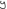
is not in general related to the location of the maximum of the density over by the simple functional relation as a consequence of the Jacobian factor. This shows that the maximum of a probability density (in contrast to a simple function) is dependent of the choice of variable. Verify that, in the case of a linear transformation, the location of the maximum transforms in the same way as the variable itself. ♢
-
✒ Solution. We are given a probability density over x and a transformation
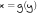
, where g is invertible and differentiable. The transformed density in y is given byDifferentiate both sides of Eq. (1.27) with respect to y to obtain the maximum of
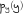
:If were simply the transformed maximum then and
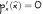
As a result, in general
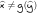
, so the location of the mode will transform differently from the variable itself. ∎


-
✒ Solution. Note that the expectation is a constant and the expectation of a constant is the constant itself, i.e
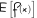
is a constant, say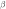
, then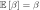
i.e.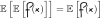
, i.e. the expectation of an expectation is just the original expectation because the inner expectation collapses to a constant.Applying the linearity of expectations i.e.
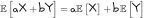
∎
![(1.38–1.38) \{begin}{align*} var \left [f(x)\right ] &= \mathbb {E}\left [\left (f(x) - \mathbb {E}\left [f(x)\right ]\right )^2\right ] \tag {1.38} \label {1.38} \\ &= \mathbb {E}\left [\left (f(x)\right )^2 - 2 f(x)
\mathbb {E}\left [f(x)\right ] + \mathbb {E}\left [f(x)\right ]^2\right ] \\ &= \mathbb {E}\left [\left (f(x)\right )^2\right ] - \mathbb {E}\left [2 f(x) \mathbb {E}\left [f(x)\right ]\right ] + \mathbb {E}\left [\mathbb {E}\left
[f(x)\right ]^2\right ] \\ &= \mathbb {E}\left [\left (f(x)\right )^2\right ] - 2 \mathbb {E}\left [f(x)\right ]^2 + \mathbb {E}\left [f(x)\right ]^2 \\ &= \mathbb {E}\left [\left (f(x)\right )^2\right ] - \mathbb {E}\left
[f(x)\right ]^2 \{end}{align*}](prml2latex-images/image-49.svg)
-
✒ Solution. The covariance of two random variables x and y is given by
Continuous variable: Let x and y be continuous random variables with their probability densities as p(x) and p(y) respectively. Then
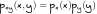
. ThenDiscrete variable:
∎
![(1.6–1.5) \{begin}{align*} \mathbb {E}_{xy}[xy] &= \iint xy p_{xy}(xy) \diff x \diff y \\ &= \iint xy p_x(x) p_y(y) \diff x \diff y \\ &= \left (\int x p_x(x) \diff x\right ) \left (\int y p_y(y) \diff y\right ) \\
\therefore \mathbb {E}_{xy}[xy] &= \mathbb {E}[x] \mathbb {E}[y] \{end}{align*}](prml2latex-images/image-54.svg)
-
✑ Problem 1‐7. In this exercise, we prove the normalization condition (1.48) for the univariate Gaussian. To do this consider, the integral
which we can evaluate by first writing its square in the form
Now make the transformation from Cartesian coordinates (x, y) to polar coordinates (r, ) and then substitute . Show that, by performing the integrals over and u, and then taking the square root of both sides, we obtain
Finally, use this result to show that the Gaussian distribution
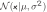
is normalized. ♢
-
✒ Solution. Cartesian to polar coordinates transformation is :
Therefore the Jacobian of the transformation is given by
The region of integration :
Let us recall that the Jacobian is a determinant that tells us how a change of variables stretches or compresses area (or volume) locally. 1
Hence, the double integral of Eq. (1.125) becomes
With the substitution
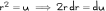
, this becomesNow let us prove that the Gaussian distribution is normalized, i.e.
Let us apply the transformation
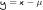
:∎
![(1.6–1.5) \{begin}{gather*} \dfrac {\partial (x, y)}{\partial (r, \theta )} = \begin{vmatrix} \dfrac {\partial x}{\partial r} & \dfrac {\partial x} {\partial \theta }\\[10pt] \dfrac {\partial y}{\partial r} & \dfrac
{\partial y} {\partial \theta } \end {vmatrix} = \begin{vmatrix} cos \theta & -r sin \theta \\ sin \theta & r cos \theta \end {vmatrix} = r\left (cos^2 \theta + sin^2 \theta \right ) = r \quad \because \left (cos^2 \theta + sin^2
\theta = 1\right ) \{end}{gather*}](prml2latex-images/image-65.svg)


-
✒ Solution.
By the transformation of , this becomes
Using the result of Eq. (1.124), the second integral becomes
Let us look at the first integral
By the transformation of
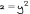
, this becomesbecause endpoints of this integral are the same, i.e.
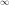
.Let us rewrite Eq. (1.127) :
By the transformation of
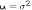
, we getDifferentiate both sides w.r.t is equivalent to differentiating w.r.t to u, we obtain
Equation 1.39 states that
∎
![(1.6–1.5) \{begin}{align*} \mathbb {E}[x] &= \dfrac {1}{\left (2\pi \sigma ^2\right )^{1/2}} \int _{-\infty }^{\infty } exp \left \{- \dfrac {1}{2 \sigma ^2} y^2 \right \} (y + \mu ) \diff y \\ &= \dfrac {1}{\left (2\pi
\sigma ^2\right )^{1/2}} \int _{-\infty }^{\infty } exp \left \{- \dfrac {1}{2 \sigma ^2} y^2 \right \} y \diff y + \mu \dfrac {1}{\left (2\pi \sigma ^2\right )^{1/2}} \int _{-\infty }^{\infty } exp \left \{- \dfrac {1}{2 \sigma ^2} y^2
\right \} \diff y \{end}{align*}](prml2latex-images/image-80.svg)

![(1.50–1.50) \{begin}{gather*} \therefore \int _{-\infty }^{\infty } exp \left \{- \dfrac {1}{2 u} \left (x - \mu \right )^2 \right \} \left (x - \mu \right )^2 \dfrac {1}{2u^2}\diff x = \left (2\pi \right )^{1/2} \dfrac {1}{2
u^{1/2}} \\ \therefore \left (\dfrac {1}{2\pi u}\right )^{1/2} \int _{-\infty }^{\infty } exp \left \{- \dfrac {1}{2 u} \left (x - \mu \right )^2 \right \} \left (x - \mu \right )^2\diff x = u \\ \therefore \left (\dfrac {1}{2\pi \sigma
^2}\right )^{1/2} \int _{-\infty }^{\infty } exp \left \{- \dfrac {1}{2 \sigma ^2} \left (x - \mu \right )^2 \right \} \left (x - \mu \right )^2\diff x = \sigma ^2 \\ \therefore \mathbb {E}\left [\left (x - \mu \right )^2\right ] = \sigma
^2 \\ \therefore \mathbb {E}\left [x^2\right ] - 2 \mu \mathbb {E}[x] + \mu ^2 = \sigma ^2 \\ \therefore \mathbb {E}\left [x^2\right ] - 2 \mu \mu + \mu ^2 = \sigma ^2 \quad \because \mathbb {E}[x] = \mu \\ \therefore \mathbb {E}\left
[x^2\right ] = \mu ^2 + \sigma ^2 \tag {1.50} \{end}{gather*}](prml2latex-images/image-91.svg)
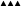
ॐ
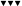
This page is intentionally left blank.
This page is intentionally left blank.